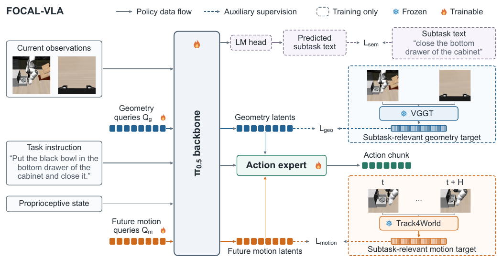
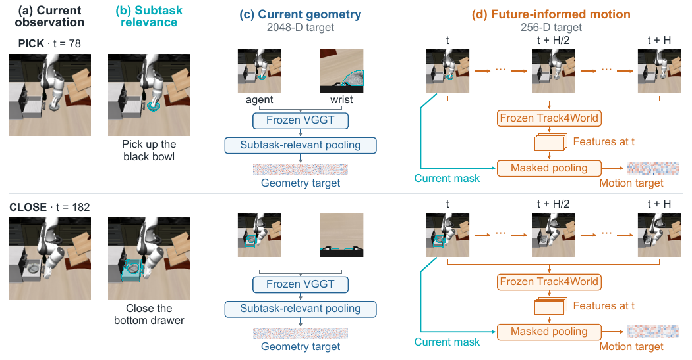
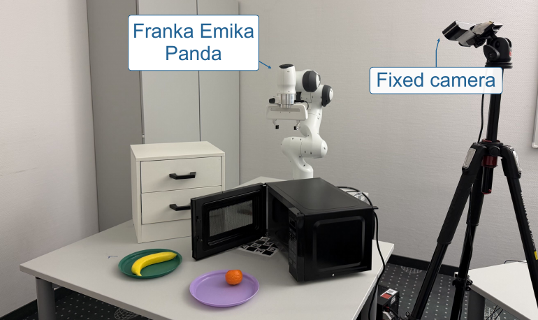
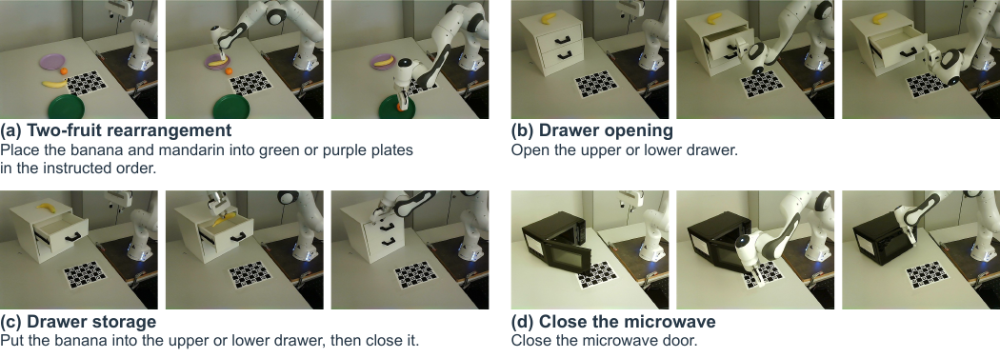

VLA models mapping 2D observations straight to actions lack spatial and temporal grounding, and whole-scene supervision distracts them. FOCAL-VLA distills geometry from subtask-relevant regions and models the interaction's 3D future, evaluated on LIBERO and RoboCasa.
Direct 2D-to-action mapping leaves models short on spatial and temporal understanding, and supervising geometry and future prediction across the entire scene buries the signal in redundant background.
Geometry distillation is restricted to image regions relevant to the current subtask, and an implicit world model learns how that interaction's 3D structure evolves next.
LIBERO and RoboCasa comparisons with per-column leaders marked, plus ablations for each component; full numeric tables live in the paper rather than the extraction.




Abstract
Vision-language-action (VLA) models built on pretrained vision-language models have demonstrated strong performance across diverse robotic manipulation tasks. However, VLA models that directly map current 2D observations to actions often lack sufficient spatial and temporal understanding, limiting their performance in precise and long-horizon manipulation. Recent methods enhance VLA models through geometric supervision and future-state prediction across the entire scene. However, these methods can suffer from redundant scene information, distracting the model from learning the geometry and dynamics relevant to the current interaction. To address this issue, we propose FOCAL-VLA, a framework that combines subtask-guided geometry distillation with implicit world modeling to learn representations of current spatial structure and future interaction dynamics. To focus geometric learning on the current subtask, we transfer geometric knowledge from VGGT to the VLA model by aligning geometry latents with features from subtask-relevant image regions. To capture the future 3D evolution of the current interaction, we incorporate implicit world modeling using Track4World features from current and future demonstration frames. The two complementary representations jointly guide action generation without running VGGT or Track4World at inference time. Experiments show that FOCAL-VLA outperforms baselines on both simulation benchmarks and real-world manipulation tasks. Project website: https://zhiyuan-gao.github.io/FOCAL-VLA/.